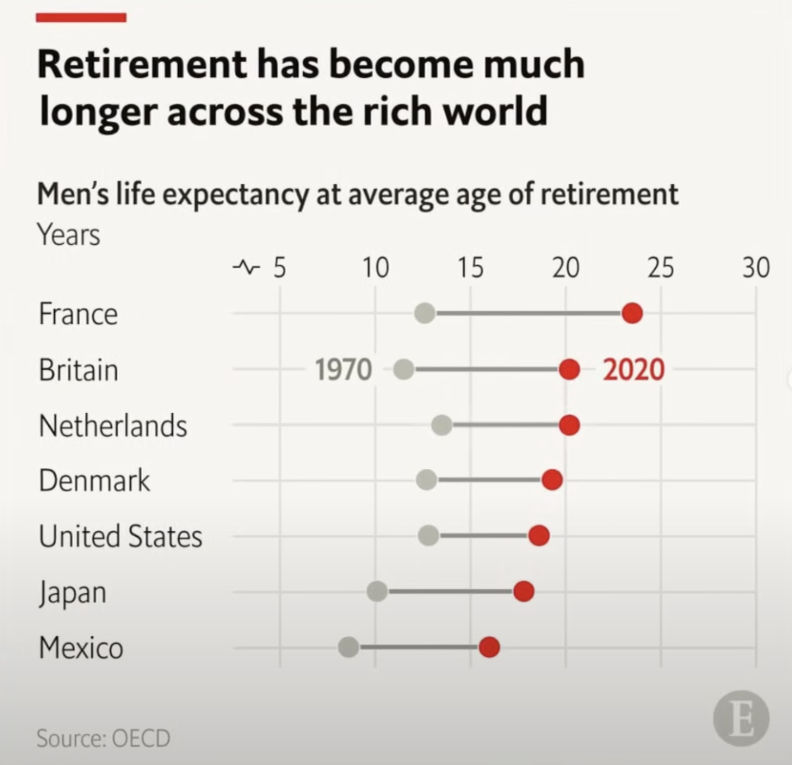
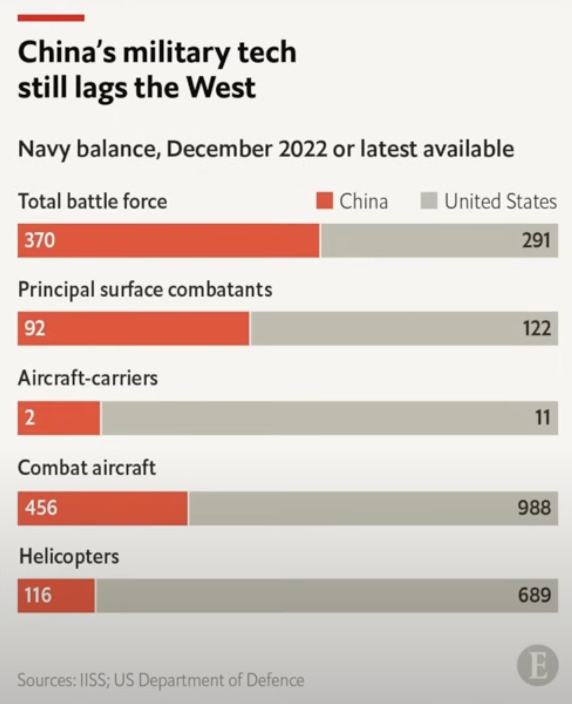

How to create charts from The Economist magazine using plotly
visualization
Author
Joram Mutenge
Published
2024-12-15
Introduction
We at Conterval have always been fans of the charts from The Economist magazine. No publication does a better job of creating static visualizations you can use in print. We love their charts because they’re simple, yet they manage to convey the relevant message contained in the data. More importantly, they adhere to Ben Shneiderman’s point that:
The purpose of visualization is insight, not pictures.
It turns out that having too much graphic detail on your charts is not as effective at conveying the message as having a simple chart. The Economist is the master of simple, yet informative charts.
Unfortunately, many people focus on the chart’s aesthetics—how it looks to the human eye. In so doing, they neglect the message contained in the data, which they are supposed to convey to the audience.
Although we may not know the specific software or graphing library used by The Economist for their charts, their simplicity makes them easy to recreate with any competent graphing tool. In this case, we’ll recreate two of their charts using the Python graphing library Plotly.
Dumbbell plot
A dumbbell plot is a dot plot that uses straight lines to connect two points for each group. This type of chart is ideal for illustrating changes in a variable over two time points or highlighting the range of a variable across multiple groups. The Economist dumbbell chart below has two groups (1970 and 2020) joined by two dots. These years are points in time.

The Economist dumbbell chart
Suits dataset
Since we didn’t have the data used to create the chart above, we put together some fake department data about a company from one of our favorite TV shows, Suits.
Below is a dataframe showing customer satisfaction scores for each department of the fictional firm Pearson Specter Litt for the years 2023 and 2024.
shape: (8, 3)
Department
2023
2024
str
i64
i64
"Customer Service"
80
70
"Finance"
60
70
"HR"
75
80
"IT"
45
55
"Operations"
85
78
"Procurement"
32
55
"Production"
20
35
"Sales"
60
65
And now here’s a Plotly recreation of our dumbbell plot.
BG_COLOR ='#E9EDF0'RED ='#E3120B'GREY ='#5e5c64'fig = go.Figure()for i inrange(df.shape[0]): fig.add_trace(go.Scatter( x=[df["2023"][i], df["2024"][i]], y=[df["Department"][i], df["Department"][i]], mode='lines+markers', line=dict(color='#598080', width=4), # Thicker line marker=dict(size=16), # Bigger dots showlegend=False )) fig.add_trace(go.Scatter( x=[df["2023"][i]], y=[df["Department"][i]], mode='markers', marker=dict(color=GREY, size=16), # Bigger dots showlegend=False )) fig.add_trace(go.Scatter( x=[df["2024"][i]], y=[df["Department"][i]], mode='markers', marker=dict(color=RED, size=16), # Bigger dots showlegend=False ))# Update layout to customize appearancefig.update_layout( title="<b>Engagement score declined in<br>customer service & operations", title_font=dict(size=26), title_y=.9, plot_bgcolor=BG_COLOR, paper_bgcolor=BG_COLOR, height=600, margin=dict(t=180, b=80), xaxis=dict( side="top", # Move x-axis to the top tickfont=dict(size=18) # Increase the font size of the x-axis ticks ), yaxis=dict( tickfont=dict(size=16) ), shapes=[dict(type="line", xref="paper", yref="paper", x0=-0.18, y0=1.5, x1=0.006, y1=1.5, line=dict( color=RED, width=10 ) )])fig.add_annotation(dict( text="<b>2023", x=0.1, # x position (0 means far left) y=0.72, # y position (adjust as necessary) xref="paper", yref="paper", showarrow=False, # No arrow font=dict( size=22, # Font size color=GREY # Font color ), align="left" ),)fig.add_annotation(dict( text="<b>2024", x=0.6, # x position (0 means far left) y=0.72, # y position (adjust as necessary) xref="paper", yref="paper", showarrow=False, # No arrow font=dict( size=22, # Font size color=RED # Font color ), align="left" ),)fig.add_layout_image(dict( source=f"data:image/png;base64,{encoded_image}", xref="paper", yref="paper", x=.94, y=-0.18, xanchor="right", yanchor="bottom", sizex=0.22, sizey=0.22, layer="above" ))fig.add_annotation(dict( text="Source: Pearson Specter Litt", x=-0.14, # x position (0 means far left) y=-0.175, # y position (adjust as necessary) xref="paper", yref="paper", showarrow=False, # No arrow font=dict( size=14, # Font size color=GREY # Font color ), align="left" ),)fig.show(renderer="iframe")
Disregard the differences between the data in my chart and The Economist’s chart, and focus on the style. You’ll see that the styles are identical. This highlights Plotly’s versatility as a graphing library—allowing you to fully customize any chart to match your preferences.
Stacked bar plot
A stacked bar chart is a type of bar graph where each bar is divided into segments that represent different subcategories. It shows how each subcategory contributes to the total value of a larger category, making it easy to see the breakdown of the whole.

The Economist stacked bar chart
What makes this chart unique is the placement of the major group names above each bar, rather than beside them. This design choice offers two key advantages: it makes it easier to associate each category with its corresponding bar and saves space, resulting in a more compact plot. Additionally, the data varies significantly—for example, from 11 to 998—which would distort the scale in a regular bar chart. By opting for a stacked bar chart, The Economist effectively addressed this issue, demonstrating thoughtful and intentional design.
Military dataset
Fortunately, all the data needed to recreate the The Economist stacked bar plot is visible in the plot. Here’s a dataframe of that data showing the category of military technology for the United States and China.
shape: (5, 3)
Category
China
United States
str
i64
i64
"Total battle force"
370
291
"Principle surface combatants"
92
122
"Aircraft-carriers"
2
11
"Combat aircaft"
456
988
"Helicopters"
116
689
And now here’s a Plotly recreation of our stacked bar plot.
df = (data .with_columns(China_pct=pl.col('China') / pl.sum_horizontal('China','United States'), US_pct=pl.col('United States') / pl.sum_horizontal('China','United States'), Category=pl.concat_str([pl.lit('<b>'), pl.col('Category')])) )# Create the percentage stacked bar chart using Plotly Graph Objectsimport plotly.graph_objects as go# Adding China's df as percentage with left-aligned textfig = go.Figure()# China's df with actual number labelfig.add_trace(go.Bar( y=[1, 2, 3, 4, 5], # Use a numerical y-axis instead of category labels x=df['China_pct'], width=.5, name='China', marker=dict(color='#E3120B'), orientation='h', text=df['China'], # Actual number label textposition='inside', # Place text inside the bar insidetextanchor='start'# Left-align the text inside the bars))# United States' df with actual number labelfig.add_trace(go.Bar( y=[1, 2, 3, 4, 5], # Match the same y-values for the US df x=df['US_pct'], name='United States', marker=dict(color='#9a9996'), # Set the color of the bars width=.5, orientation='h', text=df['United States'], # Actual number label textposition='inside', # Place text inside the bar insidetextanchor='end'# Right-align the text inside the bars))# Adding annotations for the category labels above the barsfor i, category inenumerate(df['Category']): fig.add_annotation( x=0, # Align annotation at the start (left) y=i+1.45, # Adjust the y value to move the annotation slightly above the bar text=category, # The category label showarrow=False, # Disable arrows xanchor='left', # Left-align the annotation yanchor='middle', # Center the annotation vertically xshift=0# No horizontal shift )# Update layout for percentage stacking and legend positioningfig.update_layout( height=600, margin=dict(t=200, b=50), barmode='stack', title="<b>China's military tech</b><br><b>still lags the West</b>", title_y=.9, title_x=0.03, title_font=dict(size=26),# xaxis_title='Percentage of Total Production', yaxis_title='', # Remove the category labels from y-axis xaxis=dict( tickvals=[0, 25, 50, 75, 100], # Set tick marks for percentage showgrid=False, # Hide grid lines showticklabels=False# Hide tick labels ), shapes=[dict(type="line", xref="paper", yref="paper", x0=0, y0=1.52, x1=0.1, y1=1.52, line=dict( color=RED, width=10 ) )],# Consolidating yaxis settings here yaxis=dict( showticklabels=False, # Hide the default y-axis labels showgrid=False, tickvals=[1, 2, 3, 4, 5], # Keep the numerical y-axis values ticktext=['', '', '', '', ''], # Hide y-axis text to avoid overlaprange=[0.5, 5.5] # Adjust the range to add some padding ),# Adjust the gap between the bars bargap=0.65, # Increase this to widen the gap between bars# Adjust legend positioning legend=dict( x=.96, # Horizontal position (1 is far right) y=1.04, # Vertical position (1 is top) xanchor='right', # Anchors the legend box to the right side of the plot yanchor='top', # Anchors the legend box to the top of the plot orientation='h'# Set the legend items to be horizontal ), plot_bgcolor='#E9EDF0', paper_bgcolor='#E9EDF0',# Set the font to INTER font=dict( size=12, # Adjust the size as needed color="Black"# Adjust the color as needed ),)fig.add_annotation(dict( text="Sources: IISS; US Department of Defence", x=-0.005, # x position (0 means far left) y=-0.12, # y position (adjust as necessary) xref="paper", yref="paper", showarrow=False, # No arrow font=dict(# size=12, # Font size color="#9a9996"# Font color ), align="left" ),)fig.add_annotation(dict( text="<b> Navy balance, December 2022 or latest available", x=-0.01, # x position (0 means far left) y=1.2, # y position (adjust as necessary) xref="paper", yref="paper", showarrow=False, # No arrow font=dict( size=18, # Font size color="#1a1a1a"# Font color ), align="left" ),)fig.add_layout_image(dict( source=f"data:image/png;base64,{encoded_image}", xref="paper", # Reference the x position relative to the plotting area yref="paper", # Reference the y position relative to the plotting area x=.95, # x-coordinate (1 means far right) y=-0.12, # y-coordinate (0 means bottom) xanchor="right", # Anchor the image from the right yanchor="bottom", # Anchor the image from the bottom sizex=0.2, # Set the width of the image (adjust as necessary) sizey=0.2, # Set the height of the image (adjust as necessary) layer="above"# Make sure the image is displayed above the plot ))fig.show(renderer="iframe")
And there you have it! We’ve successfully recreated charts inspired by The Economist magazine using Plotly for graphing and Polars for data manipulation.
If you need custom plots for your data, whether for print or digital media, feel free to reach out to us!